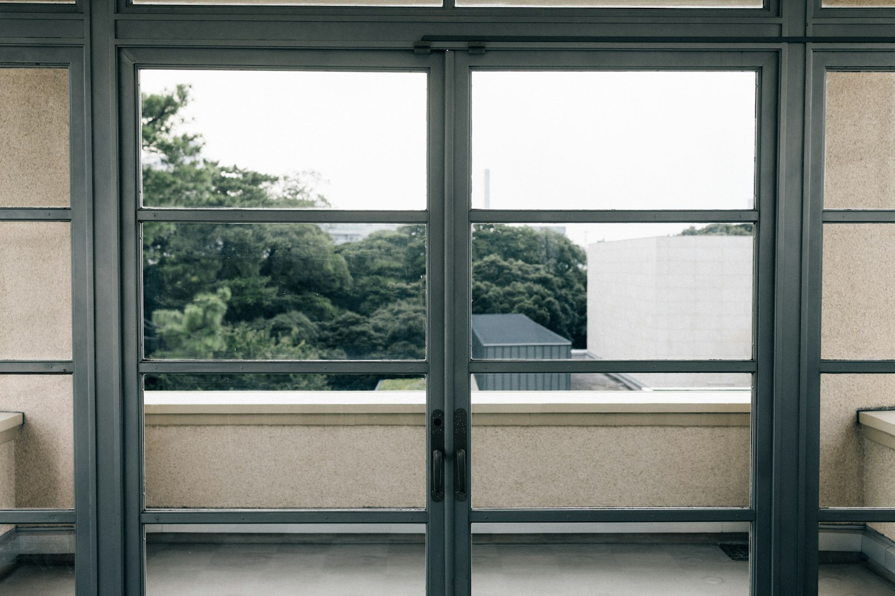
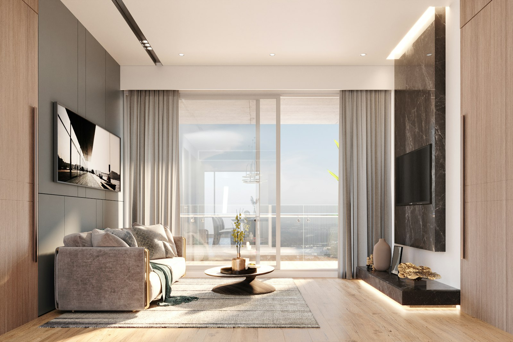
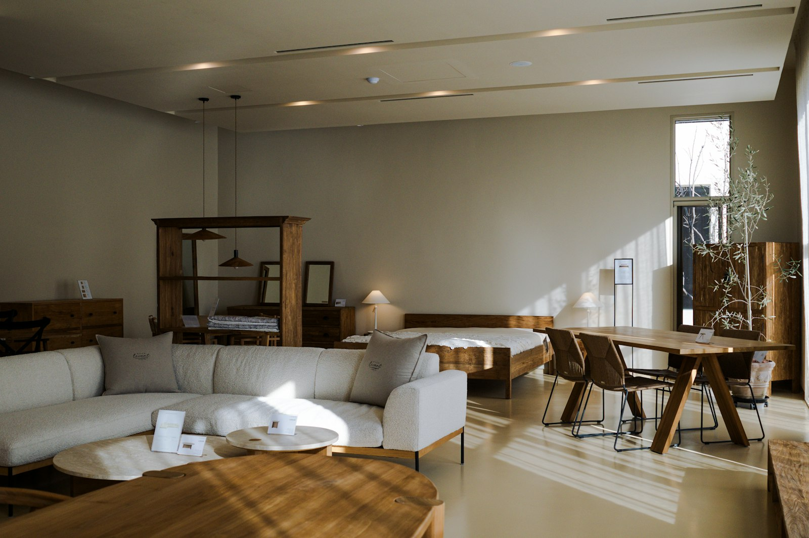
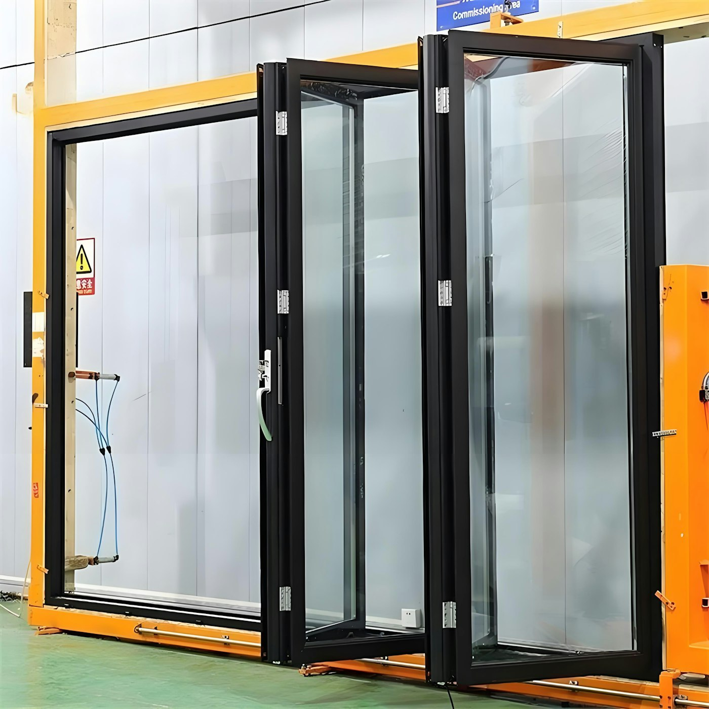

Window
낡은 샷시를 깔끔하게 철거하고, 화성 정남 공장에서
우리 집 치수에 맞춰 만든 KCC 새 창을 설치해요.

How We Work
상담부터 공사가 끝난 뒤까지 같은 팀이 맡아요. 실측한 사람이 직접 시공하니까 말이 바뀌지 않아요.
- 01
상담
전화나 문의 남겨주시면 집 크기와 바꿀 곳을 여쭤봐요.
- 02
방문 실측
창마다 크기를 재고, 샘플을 보면서 창과 유리를 같이 골라요.
- 03
공장 제작
실측한 치수대로 화성 정남 공장에서 직접 만들어요.
- 04
시공 · 마감
철거부터 설치, 실리콘 마감, 청소까지 하루에 끝내요.
공사 당일
30평대 아파트 전체 교체 기준이에요. 아침에 시작해서 저녁 전에 끝나고, 그날 밤부터 새 창으로 지내실 수 있어요.
- 08:30
보양 작업
엘리베이터와 바닥, 가구에 보호 비닐을 씌워요.
- 09:00
기존 샷시 철거
창을 떼어내고 틀을 깔끔하게 잘라내요.
- 11:30
새 창 설치
틀을 수평에 맞춰 고정하고 창짝을 끼워요.
- 15:00
실리콘 · 마감
안팎으로 틈을 메우고 마감재를 붙여요.
- 17:00
청소 · 확인
같이 열고 닫아보고, 폐기물까지 가져가요.
KCC 창호
KCC는 창틀과 유리, 틈을 메우는 실란트까지 직접 만드는 3-TOP 에너지 시스템으로 창호를 만들어요. 부품끼리 잘 맞아서 틈이 적고 단열이 좋아요.

발코니 창호
바깥에 닿는 창이라 단열과 기밀이 가장 중요해요. 이중창으로 바람과 소리를 막아요.

일반 창호
거실과 방 안쪽에 다는 창이에요. 다른 건자재와 함께 시공하기 좋게 설계됐어요.

시스템 창호
유럽식 고급 창호예요. 안쪽으로 열거나 위를 젖혀 환기할 수 있고 단열이 뛰어나요.
- 01
냉난방비 절약
PVC 창틀은 열이 알루미늄의 약 1,250분의 1만 통해요.
- 02
조용한 실내
여러 겹 기밀재와 두께가 다른 유리로 소음을 줄여요.
- 03
깔끔한 외관
창짝이 틀을 감싸는 구조에 원목 무늬도 고를 수 있어요.
- 04
부드러운 개폐
전용 호차와 레일로 큰 창도 가볍게 열려요.
- 05
궂은 날씨에 강함
보강재를 넣어 바람, 비, 염분에도 잘 버텨요.
방충망
샷시를 바꿀 때 같이 하면 한 번에 끝나요. 방충망만 따로 바꾸셔도 돼요.
- Fine Mesh
미세 촘촘 방충망
그물이 촘촘해서 날벌레와 꽃가루를 더 잘 막아요. 먼지가 덜 끼는 자가세척 방충망도 있어요.
- Black Steel
블랙 스텐 방충망
스테인리스라 잘 늘어나거나 찢어지지 않고, 바깥 풍경이 또렷하게 보여요.
- Pet Screen
고양이 방충망
긁고 매달려도 잘 찢어지지 않는 두꺼운 망이에요. 잠금장치와 함께 권해요.
- Roll Screen
롤 · 현관문 방충망
안 쓸 땐 말려 들어가요. 현관문에 달면 문을 열어두고 환기할 수 있어요.